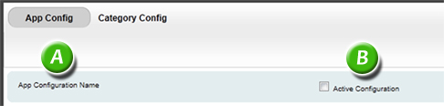

Document Version: 1.0, Last Update: 15 July 2011
Configuring Digital Sales Aid for your organization consists of these basic steps:
1. Installing the appropriate plug-in, which provides access to the mobile application settings in the Salesforce control panel.
2. Logging into Salesforce and locating the mobile application configuration tabs.
3. Setting up the Home Screen, which includes specifying a title, background image, main screen button, and product categories (including their look, feel, and locations on the screen).
4. Setting a graphic for the related links on the category detail pages (if desired).
Salesforce Plug-in Installation
Overview of App Config and Category Config Tabs
App Config Tab (Title, Top-Level Categories, Look and Feel of Home Screen)
-Main Application Settings
-Background and Category Button Settings
-Zoom View
Category Config Tab (Category Look and Feel, Sub-Categories, Relevant Links Background Image)
-Category Settings
-Category Image Configuration
1. Log in to Salesforce.com with your account credentials.
2. After login, you should see <screen goes here>
We have designed the Digital Sales Aid setup to be as quick and easy as possible. Our configuration plug-in populates the necessary tabs in your Salesforce profile tab but uses a more intuitive, WYSIWYG interface. To load the configuration utility....
1. The Application Config Screen is divided into two sections: Main Application Settings and Background and Category Button Settings.
2. The App Configuration Name (A) lists the system-generated name for the customized version of the application currently being created. Only one configuration can be active at a time. Checking the Active Configuration box (B) makes this instance active and de-activates any other configurations in progress.The three buttons on the top right (C) control how the program handles changes made in the session: click Save when finished making changes to this screen; Cancel to discard changes; Delete to erase this entire configuration.


This section of the screen focuses on the title and main button images:

A) Application Title Text: The title of the application.
B) Title Bar Color: The color of the title bar can be entered in HEX or selected by clicking the button and choosing from the pop-up box;
Alpha: Determines the opacity (transparency) between the color and the background, from a range of 0-100.
C) Title Bar Text Color: Enter the color code in HEX or by clicking the button and selecting;
Alpha: As with Title Bar Color, this setting determines the opacity of the color.
D) Logo Image: To use a logo, specify it here by browsing your machine or uploading. A preview will appear in the space below.
E) Main Button Image: Clicking Browse selects the image to be used for the application name on the home screen. Upload sends the file directly to the server. It is then displayed in the space immediately below. Note: If you want to get creative, you can have "transparent hot spots" (by using transparent PNG files, or just glow images.
F) Button Text Color: Selects the color of the text displayed in the buttons by clicking the box and selecting from the pop-up menu; Alpha: Determines the amount of transparency of the button text, expressed as a number ranging from 0 (fully transparent) - 100 (fully solid).
This screen consists of two tabs: Landscape and Portrait, for the two screen orientations available on the iPad. Both tabs work the same apart from the different screen ratios represented.

A) Click Add to add high-level categories (note that sub-categories can only be added on the Category Config tab, which is covered later in this document).
B) Click Browse to search for a background image, the Upload to send that image to the cloud. Note: this step should be done prior to arranging the category buttons to ensure a good visual layout.
C) Once a category has has been added, it will appear in the mock up screen display. Drag each to the desired location represented on the screen to the right.
D) Click the reload button to refresh the display.
E) Click to magnifying glass to activate Zoom View.
To make discrete changes, click Zoom for a closer view of the screen:

Move categories as needed. Additional categories can be selected via the drop-down Select Category drop-down (A). Click OK (B) to close the screen.
When finished with this screen, remember the three buttons at the top right: Save keeps changes; Cancel discards changes; Delete will erase the entire configuration.
Click the Category Config tab when you are finished entering information on the App Config tab.
This screen is divided into two sections: Category Settings and Category Image Configuration.
Make note of two items at the top of the screen: Category Config (A) lists the Application Name. Click Use Content Bundle (B)if you are using a content bundle. A content bundle applies if you are using HTML 5-based content and have packaged the data in a zip file. Note: if this option is checked, you will no longer be able to select category background images. The three buttons on the top right (C) control how the program handles changes made in the session: click Save when finished making changes to this screen; Cancel to discard changes; Delete to erase this entire configuration.


A) The scrolling window on the left contains all the categories entered in the App Config tab. Additional top-level and Sub-categories can be added by clicking the Add button, which loads a dialogue box:

1. Enter the name in Category Name; select a Parent Category if applicable. Save keeps the new category; Cancel closes the dialogue box without saving.
2. To position a category, click the Position Button on App Home Screen button. This button will load the layout screen from the App Config tab.
Note: Two levels of categories are allowed in the Digital Sales Aid application and help establish the hierarchy.
3. If sub-categories are being used, they can be viewed by either clicking the arrow next to an individual parent category or by clicking Expand All to expand every parent category.
4. To configure a category or sub-category, click on it in the left window. Options are to the right of the window.
B) Category Name allows the name to be edited; Use as Default makes the settings for this category applicable to all other categories.
C) Overlay Background Color allows the background color to be entered via HEX codes or selected via tapping the color box and selecting from the drop-down menu; Alpha Level (transparency) can be selected and is expressed as a value ranging from 0-100.
D) Overlay Text Color can be selected by entering the HEX code in the box or selecting from the drop-down menu.
E) Gallery/Subcategory Heading specifies the heading used in the product detail pages (in most cases, this should be kept the same as the category title).
F) Landscape Position/Portrait Position - each button invokes the corresponding Zoom View.
G) To save any changes made in this section, click Save. Cancel resets all forms and images, and Delete deletes the category from Salesforce. (A prompt will also appear asking to remove images.) Note: Save, Cancel, and Delete buttons are also located at the top right corner of the screen.
To use this section of the Category tab, first select a category from the Categories window.

B) It is also possible to select a background image for the content list. The “content list” is defined as the list of related media links which appear on the product detail page under each category. To select the background image used for each link, click Browse, select the desired image, then click Upload. A preview of the selected image will appear below.
When finished making changes in this section, click Save to make all changes active, Cancel to reset all forms and images with Salesforce category data, or Delete to erase the category from Salesforce. (A prompt will appear asking to remove images.)